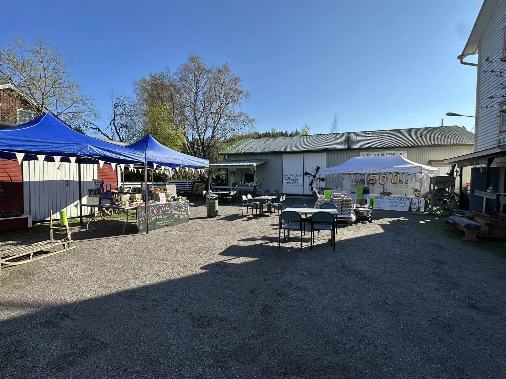
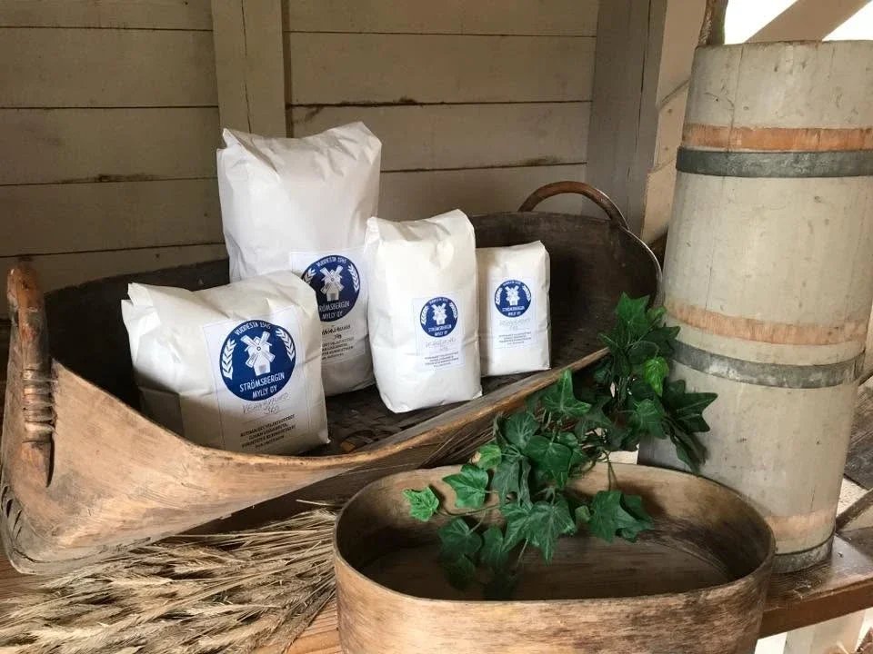
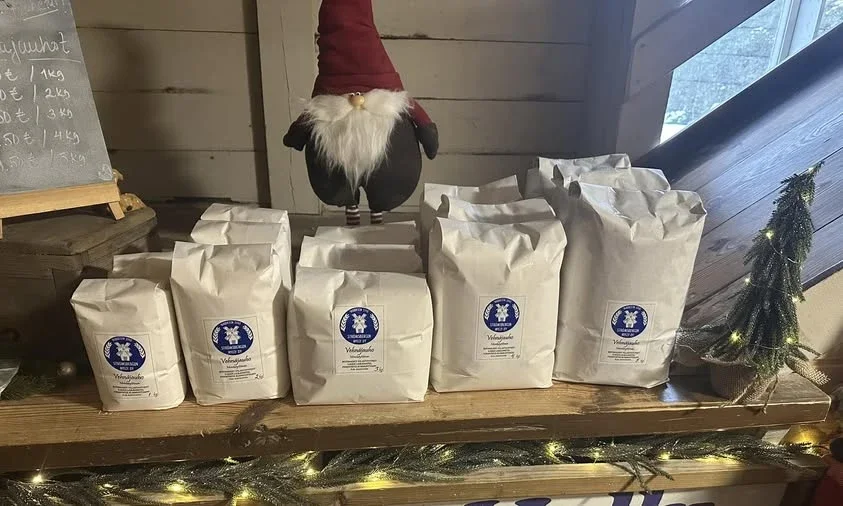

Vuodesta 1545 · Virtaala, Porvoo Sedan 1545 · Virtaala, Borgå Since 1545 · Virtaala, Porvoo
Suomen vanhimpia
toimivia maalaismyllyjä
En av Finlands äldsta
fungerande lantkvarnar
One of Finland's Oldest
Working Country Mills
Porvoonjoen partaalta alkanut tarina jatkuu yhä samalla paikalla: lähipeltojen vilja jauhetaan tuoreeksi, lisäaineettomaksi jauhoksi – perinteitä kunnioittaen. Berättelsen som började vid Borgå å fortsätter fortfarande på samma plats: säd från närliggande åkrar mals till färskt mjöl utan tillsatser – med respekt för traditionen. A story that began on the banks of the Porvoonjoki River still continues on the same ground: grain from nearby fields, stone-ground into fresh, additive-free flour, in the old way.

Tarina Historia Story
Jauhettu perinne, joka jatkuu En malen tradition som lever vidare A Milled Tradition That Endures
Strömsbergin mylly on jauhanut viljaa Porvoonjoen partaalla jo 1500-luvulta lähtien – yksi Suomen vanhimmista yhä toimivista maalaismyllyistä. Vuosisatojen ajan joen virtaus pyöritti kivet vuorokauden ympäri; 1900-luvun alussa mylly siirrettiin nykyiselle paikalleen Virtaalaan, missä se jauhaa edelleen.
Tänään myllyä pitää pyörimässä Jani Hannula, joka jatkaa isänsä Matti Hannulan 1970-luvulla aloittamaa työtä. Koneisto on suurelta osin samaa kuin vuosikymmeniä sitten – vanhin kone on peräisin vuodelta 1926 – ja kivet jauhavat viljan yhä samalla kärsivällisyydellä kuin sukupolvi sitten.
“Tätä työtä tehdään yhä hyvin perinteisillä menetelmillä ja koneilla.”— Jani Hannula
Strömsbergs kvarn har malt säd vid Borgå å sedan 1500-talet – en av Finlands äldsta fortfarande fungerande lantkvarnar. I århundraden hölls stenarna igång dygnet runt av ån; i början av 1900-talet flyttades kvarnen till sin nuvarande plats i Virtaala, där den fortfarande mal.
Idag drivs kvarnen av Jani Hannula, som för vidare det arbete hans far Matti Hannula inledde på 1970-talet. Maskinerna är till stor del desamma som för årtionden sedan – den äldsta maskinen är från 1926 – och stenarna mal säden med samma tålamod som en generation tidigare.
“Det här arbetet görs fortfarande med mycket traditionella metoder och maskiner.”— Jani Hannula
Strömsbergin Mylly has been grinding grain on the banks of the Porvoonjoki River since the 1500s – one of Finland's oldest continuously operating country mills. For centuries the river current turned the stones around the clock; in the early 1900s the mill moved to its current site in Virtaala, where it still grinds today.
Today the mill is run by Jani Hannula, continuing the work his father Matti Hannula began in the 1970s. Much of the machinery is the same as it was decades ago – the oldest machine dates to 1926 – and the stones still grind with the same patience as a generation before.
“This work is still done with very traditional methods and machines.”— Jani Hannula
Käsityö Hantverk Craft
Kivi jauhaa hitaasti – ja siksi hyvin Stenen mal långsamt – och därför bra Stone-Ground Slow — and All the Better For It
Lähes 400-kiloinen kivipari pyörii myllyssä joka päivä. Yhden erän jauhaminen kestää lähes 14 tuntia, ja 600 kilosta viljaa syntyy noin 250 kiloa täyteläistä jauhoa. Myllärin työpäivä alkaa usein jo kello viideltä aamulla ja saattaa venyä iltakymmeneen – kärsivällisyyttä vaativa työ, jota ei voi kiirehtiä. Ett nästan 400 kilo tungt stenpar snurrar i kvarnen varje dag. Att mala en sats tar nästan 14 timmar, och av 600 kilo säd blir det omkring 250 kilo fylligt mjöl. Mjölnarens arbetsdag börjar ofta redan klockan fem på morgonen och kan sträcka sig till klockan tio på kvällen – ett arbete som kräver tålamod och inte kan skyndas på. A nearly 400-kilogram pair of millstones turns in the mill every day. Grinding a single batch takes almost 14 hours, and 600 kilograms of grain yields around 250 kilograms of full-bodied flour. The miller's day often begins at five in the morning and can stretch until ten at night – patient work that simply cannot be rushed.
Kestävyys Hållbarhet Sustainability
Ei hukkaan heitettyä jyvää Inget korn går till spillo Nothing Goes to Waste
- Vilja tulee omilta pelloilta ja läheisiltä tiloilta – suurin osa alle kymmenen kilometrin säteeltä myllystä.
- Jauhatuksen sivutuotteet eivät mene hukkaan: ne päätyvät lähitilojen eläinten rehuksi tai lämmittävät myllärin kotia.
- Tuore jauho ehtii kaupan hyllylle jo vuorokauden kuluessa pakkaamisesta.
- Ei lisäaineita, ei säilöntäaineita – vain viljaa ja aikaa.
- Säden kommer från de egna åkrarna och närliggande gårdar – största delen inom tio kilometer från kvarnen.
- Malningens biprodukter går inte till spillo: de blir foder åt djur på närliggande gårdar eller värmer mjölnarens hem.
- Färskt mjöl når butikshyllan inom ett dygn efter packning.
- Inga tillsatser, inga konserveringsmedel – bara säd och tid.
- Grain comes from the mill's own fields and neighbouring farms – most of it from within ten kilometres of the mill.
- Nothing from the milling process goes to waste: by-products feed livestock on nearby farms or heat the miller's own home.
- Fresh flour reaches store shelves within a day of packing.
- No additives, no preservatives – just grain and time.

Tuotteet Produkter Products
Jauhoja ja hiutaleita – lähes 55 tuotetta Mjöl och flingor – nästan 55 produkter Flours and Flakes — Nearly 55 Products
Valikoimassa jauhautuu vehnä, ruis, ohra, kaura, tattari ja härkäpapu – kukin viljalaji omaksi, tunnistettavaksi jauhokseen tai hiutaleeksi. I sortimentet mals vete, råg, korn, havre, bovete och åkerböna – varje sädesslag till sitt eget, igenkännbara mjöl eller flingor. The range includes wheat, rye, barley, oats, buckwheat and fava bean – each grain milled into its own distinct flour or flakes.
VehnäjauhotVetemjölWheat Flour
RuisjauhotRågmjölRye Flour
OhrajauhotKornmjölBarley Flour
KaurahiutaleetHavreflingorOat Flakes
TattarijauhotBovetemjölBuckwheat Flour
HärkäpapujauhotÅkerbönsmjölFava Bean Flour
Talonpojan LettujauhoBondens VåffelmjölFarmer's Pancake Flour
Vehnää, ohraa, tattaria ja kuivattua vadelmaa. Vete, korn, bovete och torkade hallon. Wheat, barley, buckwheat and dried raspberry.
Ajantasaisen hinnaston ja saatavuuden näet myllypuodista tai kysy suoraan meiltä. Aktuell prislista och tillgänglighet hittar du i kvarnbutiken eller genom att fråga oss direkt. For current pricing and availability, visit the mill shop or ask us directly.
Vierailu Besök oss Visit
Vieraile myllyllä Besök kvarnen Plan Your Visit
Myllypuodissa pääset ostamaan tuoreita jauhoja ja hiutaleita suoraan lähteeltä – ja samalla löydät hyllyltä muidenkin lähituottajien antimia: kananmunia, hunajaa, mehuja ja mausteita. Puodin yhteydessä toimii myös myllyn oma kirpputori.
Mylly pitää perinteisesti kesätaukoa heinä–elokuun vaihteessa. Ajantasaiset aukioloajat löydät aina Facebook-sivultamme.
Tuotteitamme myydään myös Sale Askolassa, Monninkylässä ja Pornaisissa, S-market Näsissä Porvoossa sekä Reko-renkaiden kautta.
I kvarnbutiken kan du köpa färskt mjöl och färska flingor direkt från källan – och samtidigt hitta andra närproducenters varor på hyllorna: ägg, honung, saft och kryddor. I anslutning till butiken finns även kvarnens egen loppmarknad.
Kvarnen håller traditionellt sommaruppehåll kring juli–augusti. Aktuella öppettider hittar du alltid på vår Facebook-sida.
Våra produkter säljs även i Sale Askola, Monninkylä och Pornainen, S-market Näsi i Borgå samt via Reko-ringarna.
At the mill shop you can buy fresh flour and flakes straight from the source – and discover other local producers' goods on the shelves too: eggs, honey, juices and spices. A mill flea market also runs alongside the shop.
The mill traditionally takes a summer break around July–August. Current opening hours are always posted on our Facebook page.
Our products are also sold at Sale Askola, Monninkylä and Pornainen, S-market Näsi in Porvoo, and through local Reko food rings.
06500 Porvoo, Suomi Hae reitti → Visa vägbeskrivning → Get directions →
Yhteystiedot Kontakt Contact
Ota yhteyttä Kontakta oss Get in Touch
Kysy jauhoista, tilauksista tai poikkea juttusille – vastaamme mielellämme. Fråga om mjöl, beställningar eller kom och prata med oss – vi svarar gärna. Ask about flour, orders, or just stop by for a chat – we're happy to help.